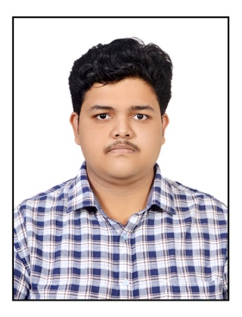

Sai Kiran Chipurupalli

Summary
Highly focused, driven, and hardworking individual with an experience of
1.8 years. Currently working for Subway Restaurant Company for the past
1.6 years as a Business Analyst.
Education
-
Bachelor of Technology, Gokaraju Rangaraju Institute of Engineering and
Technology (2017 - 2021)
- Intermediate (+1/+2), Narayana Junior College (2015 - 2017)
- 10th, Narayana English Medium School (2012 - 2015)
Work Experience
Senior Analyst - Capgemini
- Worked as a Business Analyst for Subway Client.
-
Work mostly invloved gathering business requirements and setting up
menus using Subway proprietary tools.
-
communicating with clients/various stakeholders/other teams, helping
team members to progress in their tasks, assisting Dev/Middleware team
in solving bugs re to menu when they are reported are some of the
tasks that pop up in a typical work day.
Skills
-
Technical: HTML, CSS, JavaScript, C#, .NET Core MVC, GIT, Azure,
SQL.
-
Functional: Exceptional communication and interpersonal skills,
efficient requirements gathering, team player, good analytical and
critical thinking skills, understanding business objective, decision
making, report making.
Awards & Certfications
Portfolio